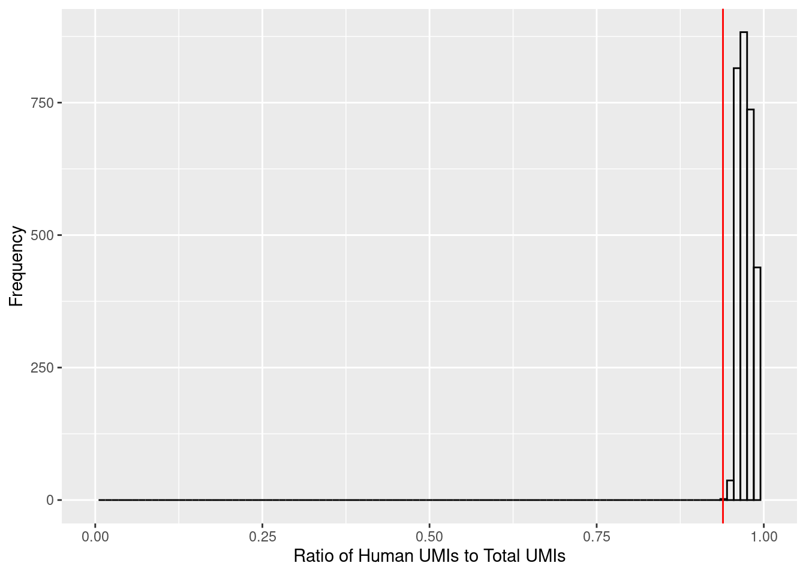

Last updated: 2021-02-14
Checks: 7 0
Knit directory: human-chimp-skeletal-scRNA/
This reproducible R Markdown analysis was created with workflowr (version 1.6.2). The Checks tab describes the reproducibility checks that were applied when the results were created. The Past versions tab lists the development history.
Great! Since the R Markdown file has been committed to the Git repository, you know the exact version of the code that produced these results.
Great job! The global environment was empty. Objects defined in the global environment can affect the analysis in your R Markdown file in unknown ways. For reproduciblity it’s best to always run the code in an empty environment.
The command set.seed(20190719) was run prior to running the code in the R Markdown file. Setting a seed ensures that any results that rely on randomness, e.g. subsampling or permutations, are reproducible.
Great job! Recording the operating system, R version, and package versions is critical for reproducibility.
Nice! There were no cached chunks for this analysis, so you can be confident that you successfully produced the results during this run.
Great job! Using relative paths to the files within your workflowr project makes it easier to run your code on other machines.
Great! You are using Git for version control. Tracking code development and connecting the code version to the results is critical for reproducibility.
The results in this page were generated with repository version eb96bd8. See the Past versions tab to see a history of the changes made to the R Markdown and HTML files.
Note that you need to be careful to ensure that all relevant files for the analysis have been committed to Git prior to generating the results (you can use wflow_publish or wflow_git_commit). workflowr only checks the R Markdown file, but you know if there are other scripts or data files that it depends on. Below is the status of the Git repository when the results were generated:
Ignored files:
Ignored: .Rhistory
Ignored: .Rproj.user/
Ignored: analysis/10x-data-0-process-test.html
Untracked files:
Untracked: analysis/TODO_10x-data-1-process.Rmd
Untracked: analysis/TODO_10x-data-2-qc.Rmd
Untracked: analysis/TODO_10x-data-3-integrate.Rmd
Untracked: analysis/TODO_10x-data-4-classification-t2.Rmd
Untracked: analysis/TODO_10x-data-4-classification-tot.Rmd
Untracked: analysis/TODO_10x-data-4-classification.Rmd
Untracked: analysis/TODO_10x-data-5-diffexp.Rmd
Untracked: analysis/TODO_10x-data-6-conservexp.Rmd
Untracked: analysis/TODO_10x-data-6-cormotif-t2.Rmd
Untracked: analysis/TODO_10x-data-6-cormotif-tot.Rmd
Untracked: analysis/TODO_10x-data-6-variance-t2.Rmd
Untracked: analysis/TODO_10x-data-6-variance-tot.Rmd
Untracked: analysis/TODO_10x-data-7-enrichment.Rmd
Untracked: analysis/TODO_10x-data-8-batch-correlation.Rmd
Untracked: analysis/TODO_10x-plot-classification.Rmd
Untracked: analysis/TODO_10x-plot-diffexp.Rmd
Untracked: analysis/TODO_10x-plot-replicate-correlation-t2.Rmd
Untracked: analysis/TODO_10x-plot-replicate-correlation-tot.Rmd
Untracked: analysis/TODO_10x-plot-utf1-tac3.Rmd
Untracked: analysis/TODO_10x-view-batch-effects.Rmd
Untracked: analysis/TODO_10x-view-data-metrics.Rmd
Untracked: analysis/TODO_10x-view-species-assignments.Rmd
Untracked: analysis/TODO_10x-view-validation-data.Rmd
Untracked: analysis/v2/
Untracked: code/FindMarkers.R
Untracked: code/FindMarkers.sh
Untracked: code/GoM.R
Untracked: code/GoM.sh
Untracked: code/fastTopics.R
Untracked: code/fastTopics.sh
Untracked: code/fastTopicsBC.R
Untracked: code/fastTopicsBC.sh
Untracked: code/fastTopicsSpp.R
Untracked: code/fastTopicsSpp.sh
Untracked: code/fastTopicsSppBC.R
Untracked: code/fastTopicsSppBC.sh
Untracked: code/v2/
Untracked: data/HumanPrimaryCellAtlasData-SingleR
Untracked: data/HumanPrimaryCellAtlasDetails-SingleR.csv
Untracked: data/HumanPrimaryCellAtlasLabels-SingleR.csv
Untracked: data/alizarin-red-quant-total.csv
Untracked: data/cell_atlas_ref_panel
Untracked: data/cellranger-data-full/
Untracked: data/corrmatrix.ost
Untracked: data/de-data/
Untracked: data/facs-MSC-collection-summary-sample-avg.csv
Untracked: data/facs-MSC-collection-summary-species-avg.csv
Untracked: data/facs-MSC-collection-summary-total.csv
Untracked: data/gom-data/
Untracked: data/oil-red-quant-total.csv
Untracked: data/scrna-batch-reformat.csv
Untracked: data/scrna-batch.csv
Untracked: output/v1/
Untracked: output/v2/
Unstaged changes:
Deleted: analysis/10x-data-1-process.Rmd
Deleted: analysis/10x-data-2-qc.Rmd
Deleted: analysis/10x-data-3-integrate.Rmd
Deleted: analysis/10x-data-4-classification-t2.Rmd
Deleted: analysis/10x-data-4-classification-tot.Rmd
Deleted: analysis/10x-data-4-classification.Rmd
Deleted: analysis/10x-data-5-diffexp.Rmd
Deleted: analysis/10x-data-6-conservexp.Rmd
Deleted: analysis/10x-data-6-cormotif-t2.Rmd
Deleted: analysis/10x-data-6-cormotif-tot.Rmd
Deleted: analysis/10x-data-6-variance-t2.Rmd
Deleted: analysis/10x-data-6-variance-tot.Rmd
Deleted: analysis/10x-data-7-enrichment.Rmd
Deleted: analysis/10x-data-8-batch-correlation.Rmd
Modified: analysis/10x-plot-cellcalling.Rmd
Deleted: analysis/10x-plot-classification.Rmd
Deleted: analysis/10x-plot-diffexp.Rmd
Deleted: analysis/10x-plot-replicate-correlation-t2.Rmd
Deleted: analysis/10x-plot-replicate-correlation-tot.Rmd
Deleted: analysis/10x-plot-utf1-tac3.Rmd
Deleted: analysis/10x-view-batch-effects.Rmd
Deleted: analysis/10x-view-data-metrics.Rmd
Deleted: analysis/10x-view-species-assignments.Rmd
Deleted: analysis/10x-view-validation-data.Rmd
Deleted: analysis/asbmr2020-plots.Rmd
Deleted: analysis/ashg2020-plots.Rmd
Deleted: analysis/temp-code.Rmd
Deleted: analysis/v1/index.Rmd
Deleted: analysis/v1/license.Rmd
Modified: code/DEdream.R
Deleted: code/DEdream_totcell.filter.pch20.fml1.nofc.bh_adhoc.err
Deleted: code/DEdream_totcell.filter.pch20.fml1.nofc.bh_adhoc.out
Deleted: code/DEdream_totcell.filter.pch20.fml1.nofc.bh_cluster.err
Deleted: code/DEdream_totcell.filter.pch20.fml1.nofc.bh_cluster.out
Deleted: code/DEdream_totcell.filter.pch20.fml1.nofc.bh_ostadhoc.err
Deleted: code/DEdream_totcell.filter.pch20.fml1.nofc.bh_ostadhoc.out
Deleted: code/DEdream_totcell.filter.pch20.fml1.nofc.bh_stage.err
Deleted: code/DEdream_totcell.filter.pch20.fml1.nofc.bh_stage.out
Deleted: code/DEdream_totcell.filter.pch20.fml2.nofc.bh_adhoc.err
Deleted: code/DEdream_totcell.filter.pch20.fml2.nofc.bh_adhoc.out
Deleted: code/DEdream_totcell.filter.pch20.fml2.nofc.bh_cluster.err
Deleted: code/DEdream_totcell.filter.pch20.fml2.nofc.bh_cluster.out
Deleted: code/DEdream_totcell.filter.pch20.fml2.nofc.bh_ostadhoc.err
Deleted: code/DEdream_totcell.filter.pch20.fml2.nofc.bh_ostadhoc.out
Deleted: code/DEdream_totcell.filter.pch20.fml2.nofc.bh_stage.err
Deleted: code/DEdream_totcell.filter.pch20.fml2.nofc.bh_stage.out
Deleted: code/DEdream_totcell.filter.pch20.fml3.nofc.bh_adhoc.err
Deleted: code/DEdream_totcell.filter.pch20.fml3.nofc.bh_adhoc.out
Deleted: code/DEdream_totcell.filter.pch20.fml3.nofc.bh_cluster.err
Deleted: code/DEdream_totcell.filter.pch20.fml3.nofc.bh_cluster.out
Deleted: code/DEdream_totcell.filter.pch20.fml3.nofc.bh_ostadhoc.err
Deleted: code/DEdream_totcell.filter.pch20.fml3.nofc.bh_ostadhoc.out
Deleted: code/DEdream_totcell.filter.pch20.fml3.nofc.bh_stage.err
Deleted: code/DEdream_totcell.filter.pch20.fml3.nofc.bh_stage.out
Deleted: code/DEdream_totcell.filter.pch20.fml4.nofc.bh_adhoc.err
Deleted: code/DEdream_totcell.filter.pch20.fml4.nofc.bh_adhoc.out
Deleted: code/DEdream_totcell.filter.pch20.fml4.nofc.bh_cluster.err
Deleted: code/DEdream_totcell.filter.pch20.fml4.nofc.bh_cluster.out
Deleted: code/DEdream_totcell.filter.pch20.fml4.nofc.bh_ostadhoc.err
Deleted: code/DEdream_totcell.filter.pch20.fml4.nofc.bh_ostadhoc.out
Deleted: code/DEdream_totcell.filter.pch20.fml4.nofc.bh_stage.err
Deleted: code/DEdream_totcell.filter.pch20.fml4.nofc.bh_stage.out
Deleted: code/DEdream_totcell.filter.pch20.fml5.nofc.bh_adhoc.err
Deleted: code/DEdream_totcell.filter.pch20.fml5.nofc.bh_adhoc.out
Deleted: code/DEdream_totcell.filter.pch20.fml5.nofc.bh_cluster.err
Deleted: code/DEdream_totcell.filter.pch20.fml5.nofc.bh_cluster.out
Deleted: code/DEdream_totcell.filter.pch20.fml5.nofc.bh_ostadhoc.err
Deleted: code/DEdream_totcell.filter.pch20.fml5.nofc.bh_ostadhoc.out
Deleted: code/DEdream_totcell.filter.pch20.fml5.nofc.bh_stage.err
Deleted: code/DEdream_totcell.filter.pch20.fml5.nofc.bh_stage.out
Deleted: code/DEdream_totcell.keepRep1.filter.pch20.fml1.nofc.bh_adhoc.err
Deleted: code/DEdream_totcell.keepRep1.filter.pch20.fml1.nofc.bh_adhoc.out
Deleted: code/DEdream_totcell.keepRep1.filter.pch20.fml1.nofc.bh_cluster.err
Deleted: code/DEdream_totcell.keepRep1.filter.pch20.fml1.nofc.bh_cluster.out
Deleted: code/DEdream_totcell.keepRep1.filter.pch20.fml1.nofc.bh_ostadhoc.err
Deleted: code/DEdream_totcell.keepRep1.filter.pch20.fml1.nofc.bh_ostadhoc.out
Deleted: code/DEdream_totcell.keepRep1.filter.pch20.fml1.nofc.bh_stage.err
Deleted: code/DEdream_totcell.keepRep1.filter.pch20.fml1.nofc.bh_stage.out
Deleted: code/DEdream_totcell.keepRep1.filter.pch20.fml5.nofc.bh_adhoc.err
Deleted: code/DEdream_totcell.keepRep1.filter.pch20.fml5.nofc.bh_adhoc.out
Deleted: code/DEdream_totcell.keepRep1.filter.pch20.fml5.nofc.bh_cluster.err
Deleted: code/DEdream_totcell.keepRep1.filter.pch20.fml5.nofc.bh_cluster.out
Deleted: code/DEdream_totcell.keepRep1.filter.pch20.fml5.nofc.bh_ostadhoc.err
Deleted: code/DEdream_totcell.keepRep1.filter.pch20.fml5.nofc.bh_ostadhoc.out
Deleted: code/DEdream_totcell.keepRep1.filter.pch20.fml5.nofc.bh_stage.err
Deleted: code/DEdream_totcell.keepRep1.filter.pch20.fml5.nofc.bh_stage.out
Deleted: code/DEdream_totcell.keepRep2.filter.pch20.fml1.nofc.bh_FALSE.out
Deleted: code/DEdream_totcell.keepRep2.filter.pch20.fml1.nofc.bh_adhoc.err
Deleted: code/DEdream_totcell.keepRep2.filter.pch20.fml1.nofc.bh_adhoc.out
Deleted: code/DEdream_totcell.keepRep2.filter.pch20.fml1.nofc.bh_cluster.err
Deleted: code/DEdream_totcell.keepRep2.filter.pch20.fml1.nofc.bh_cluster.out
Deleted: code/DEdream_totcell.keepRep2.filter.pch20.fml1.nofc.bh_ostadhoc.err
Deleted: code/DEdream_totcell.keepRep2.filter.pch20.fml1.nofc.bh_ostadhoc.out
Deleted: code/DEdream_totcell.keepRep2.filter.pch20.fml1.nofc.bh_stage.err
Deleted: code/DEdream_totcell.keepRep2.filter.pch20.fml1.nofc.bh_stage.out
Deleted: code/DEdream_totcell.keepRep2.filter.pch20.fml5.nofc.bh_adhoc.err
Deleted: code/DEdream_totcell.keepRep2.filter.pch20.fml5.nofc.bh_adhoc.out
Deleted: code/DEdream_totcell.keepRep2.filter.pch20.fml5.nofc.bh_cluster.err
Deleted: code/DEdream_totcell.keepRep2.filter.pch20.fml5.nofc.bh_cluster.out
Deleted: code/DEdream_totcell.keepRep2.filter.pch20.fml5.nofc.bh_ostadhoc.err
Deleted: code/DEdream_totcell.keepRep2.filter.pch20.fml5.nofc.bh_ostadhoc.out
Deleted: code/DEdream_totcell.keepRep2.filter.pch20.fml5.nofc.bh_stage.err
Deleted: code/DEdream_totcell.keepRep2.filter.pch20.fml5.nofc.bh_stage.out
Deleted: code/DEdream_totcell.pseudo.nofilter.fml1.nofc.bh_adhoc.err
Deleted: code/DEdream_totcell.pseudo.nofilter.fml1.nofc.bh_adhoc.out
Deleted: code/DEdream_totcell.pseudo.nofilter.fml1.nofc.bh_cluster.err
Deleted: code/DEdream_totcell.pseudo.nofilter.fml1.nofc.bh_cluster.out
Deleted: code/DEdream_totcell.pseudo.nofilter.fml1.nofc.bh_ostadhoc.err
Deleted: code/DEdream_totcell.pseudo.nofilter.fml1.nofc.bh_ostadhoc.out
Deleted: code/DEdream_totcell.pseudo.nofilter.fml1.nofc.bh_stage.err
Deleted: code/DEdream_totcell.pseudo.nofilter.fml1.nofc.bh_stage.out
Deleted: code/DEdream_totcell.subNum.filter.pch20.fml1.nofc.bh_adhoc.err
Deleted: code/DEdream_totcell.subNum.filter.pch20.fml1.nofc.bh_adhoc.out
Deleted: code/DEdream_totcell.subNum.filter.pch20.fml1.nofc.bh_cluster.err
Deleted: code/DEdream_totcell.subNum.filter.pch20.fml1.nofc.bh_cluster.out
Deleted: code/DEdream_totcell.subNum.filter.pch20.fml1.nofc.bh_ostadhoc.err
Deleted: code/DEdream_totcell.subNum.filter.pch20.fml1.nofc.bh_ostadhoc.out
Deleted: code/DEdream_totcell.subNum.filter.pch20.fml1.nofc.bh_stage.err
Deleted: code/DEdream_totcell.subNum.filter.pch20.fml1.nofc.bh_stage.out
Deleted: code/DEdream_totcell.subNum.filter.pch20.fml5.nofc.bh_adhoc.err
Deleted: code/DEdream_totcell.subNum.filter.pch20.fml5.nofc.bh_adhoc.out
Deleted: code/DEdream_totcell.subNum.filter.pch20.fml5.nofc.bh_cluster.err
Deleted: code/DEdream_totcell.subNum.filter.pch20.fml5.nofc.bh_cluster.out
Deleted: code/DEdream_totcell.subNum.filter.pch20.fml5.nofc.bh_ostadhoc.err
Deleted: code/DEdream_totcell.subNum.filter.pch20.fml5.nofc.bh_ostadhoc.out
Deleted: code/DEdream_totcell.subNum.filter.pch20.fml5.nofc.bh_stage.err
Deleted: code/DEdream_totcell.subNum.filter.pch20.fml5.nofc.bh_stage.out
Modified: code/DEdreamsubset.R
Deleted: code/DEedgeR_totcell.filter.pch20.fc.bh_adhoc.err
Deleted: code/DEedgeR_totcell.filter.pch20.fc.bh_adhoc.out
Deleted: code/DEedgeR_totcell.filter.pch20.fc.bh_cluster.err
Deleted: code/DEedgeR_totcell.filter.pch20.fc.bh_cluster.out
Deleted: code/DEedgeR_totcell.filter.pch20.fc.bh_ostadhoc.err
Deleted: code/DEedgeR_totcell.filter.pch20.fc.bh_ostadhoc.out
Deleted: code/DEedgeR_totcell.filter.pch20.fc.bh_stage.err
Deleted: code/DEedgeR_totcell.filter.pch20.fc.bh_stage.out
Deleted: code/DEedgeR_totcell.keepRep1.filter.pch20.fc.bh_adhoc.err
Deleted: code/DEedgeR_totcell.keepRep1.filter.pch20.fc.bh_adhoc.out
Deleted: code/DEedgeR_totcell.keepRep1.filter.pch20.fc.bh_cluster.err
Deleted: code/DEedgeR_totcell.keepRep1.filter.pch20.fc.bh_cluster.out
Deleted: code/DEedgeR_totcell.keepRep1.filter.pch20.fc.bh_ostadhoc.err
Deleted: code/DEedgeR_totcell.keepRep1.filter.pch20.fc.bh_ostadhoc.out
Deleted: code/DEedgeR_totcell.keepRep1.filter.pch20.fc.bh_stage.err
Deleted: code/DEedgeR_totcell.keepRep1.filter.pch20.fc.bh_stage.out
Deleted: code/DEedgeR_totcell.keepRep2.filter.pch20.fc.bh_adhoc.err
Deleted: code/DEedgeR_totcell.keepRep2.filter.pch20.fc.bh_adhoc.out
Deleted: code/DEedgeR_totcell.keepRep2.filter.pch20.fc.bh_cluster.err
Deleted: code/DEedgeR_totcell.keepRep2.filter.pch20.fc.bh_cluster.out
Deleted: code/DEedgeR_totcell.keepRep2.filter.pch20.fc.bh_ostadhoc.err
Deleted: code/DEedgeR_totcell.keepRep2.filter.pch20.fc.bh_ostadhoc.out
Deleted: code/DEedgeR_totcell.keepRep2.filter.pch20.fc.bh_stage.err
Deleted: code/DEedgeR_totcell.keepRep2.filter.pch20.fc.bh_stage.out
Deleted: code/DEedgeR_totcell.subNum.filter.pch20.fc.bh_adhoc.err
Deleted: code/DEedgeR_totcell.subNum.filter.pch20.fc.bh_adhoc.out
Deleted: code/DEedgeR_totcell.subNum.filter.pch20.fc.bh_cluster.err
Deleted: code/DEedgeR_totcell.subNum.filter.pch20.fc.bh_cluster.out
Deleted: code/DEedgeR_totcell.subNum.filter.pch20.fc.bh_ostadhoc.err
Deleted: code/DEedgeR_totcell.subNum.filter.pch20.fc.bh_ostadhoc.out
Deleted: code/DEedgeR_totcell.subNum.filter.pch20.fc.bh_stage.err
Deleted: code/DEedgeR_totcell.subNum.filter.pch20.fc.bh_stage.out
Note that any generated files, e.g. HTML, png, CSS, etc., are not included in this status report because it is ok for generated content to have uncommitted changes.
These are the previous versions of the repository in which changes were made to the R Markdown (analysis/10x-data-0-process-test.Rmd) and HTML (docs/10x-data-0-process-test.html) files. If you’ve configured a remote Git repository (see ?wflow_git_remote), click on the hyperlinks in the table below to view the files as they were in that past version.
| File | Version | Author | Date | Message |
|---|---|---|---|---|
| Rmd | 36b68dc | Genevieve Housman | 2021-02-11 | testing new species assignments |
Using cellranger to assign cells in human/chimp mixtures is somewhat problematic. Here, I test how well cells are assigned using cell ranger when all cells are known to be human cells.
Human-Only Data (samples collected for Anthony’s pilot eQTL project + external data)
Chimp-Only Data (external data)
References
cd /project2/gilad/ghousman/external-data
module load sra_toolkit/2.8
#chimp data
mkdir SRR8403265
cd SRR8403265/
wget ftp://ftp.sra.ebi.ac.uk/vol1/fastq/SRR840/005/SRR8403265/SRR8403265.fastq.gz
fastq-dump --split-files SRR8403265
#rename and zip files to conform to cellranger specifications
mv SRR8403265_1.fastq SRR8403265_S1_L001_R1_001.fastq
mv SRR8403265_2.fastq SRR8403265_S1_L001_R2_001.fastq
mv SRR8403265_3.fastq SRR8403265_S1_L001_I1_001.fastq
gzip *.fastq
#check file names
zcat SRR8403265_S1_L001_R1_001.fastq.gz | head -n 10
zcat SRR8403265_S1_L001_R2_001.fastq.gz | head -n 10
zcat SRR8403265_S1_L001_I1_001.fastq.gz | head -n 10
rm SRR8403265.fastq.gz
#human data
mkdir SRR8403264
cd SRR8403264/
wget ftp://ftp.sra.ebi.ac.uk/vol1/fastq/SRR840/004/SRR8403264/SRR8403264.fastq.gz
fastq-dump --split-files SRR8403264
#rename and zip files to conform to cellranger specifications
mv SRR8403264_1.fastq SRR8403264_S1_L001_R1_001.fastq
mv SRR8403264_2.fastq SRR8403264_S1_L001_R2_001.fastq
mv SRR8403264_3.fastq SRR8403264_S1_L001_I1_001.fastq
gzip *.fastq
#check file names
zcat SRR8403264_S1_L001_R1_001.fastq.gz | head -n 10
zcat SRR8403264_S1_L001_R2_001.fastq.gz | head -n 10
zcat SRR8403264_S1_L001_I1_001.fastq.gz | head -n 10
rm SRR8403264.fastq.gzFastq files were processed into count matrices (genes x cells) and cell types assigned using cellranger 3.1.0.
The cellranger reference was made using the hg38 and panTro6 genomes and ortho-exon v2 annotation (completed by KB):
Notes on what cellranger does to compute count matrices:
cd /project2/gilad/ghousman/skeletal-human-chimp/scRNA/cellranger-data-full/cellranger-data-HumanOrthoV2_and_ChimpOrthoV2
sbatch ./../../../human-chimp-skeletal-scRNA/code/submit-cellranger-count-multispp.sh YG-AH-2S-ANT-1 /project2/gilad/kenneth/References/HumanChimpCellranger/cellranger3.1/HumanOrthoV2_and_ChimpOrthoV2 /project2/gilad/anthonyhung/Projects/OAStrain_project/YriMultiplex/fastq/
sbatch ./../../../human-chimp-skeletal-scRNA/code/submit-cellranger-count-multispp.sh SRR8403265 /project2/gilad/kenneth/References/HumanChimpCellranger/cellranger3.1/HumanOrthoV2_and_ChimpOrthoV2 /project2/gilad/ghousman/external-data/SRR8403265
sbatch ./../../../human-chimp-skeletal-scRNA/code/submit-cellranger-count-multispp.sh SRR8403264 /project2/gilad/kenneth/References/HumanChimpCellranger/cellranger3.1/HumanOrthoV2_and_ChimpOrthoV2 /project2/gilad/ghousman/external-data/SRR8403264library(ggplot2)
library(gridExtra)#load data
dir_data <- paste0('./../scRNA/cellranger-data-full/cellranger-data-HumanOrthoV2_and_ChimpOrthoV2/YG-AH-2S-ANT-1/outs/analysis/')
temp <- read.csv(file=paste0(dir_data,'gem_classification.csv'))
#make 10x calls a factor
temp$call <- factor(temp$call, levels=c("ChimpOrthoV2","HumanOrthoV2","Multiplet"), labels=c("chimp","human","multiplet"))
#number of species assignments
table(temp$call)
chimp human multiplet
0 407 2614 #maximum number of UMIs/cell that aligned to each genome
max(temp$ChimpOrthoV2)[1] 1924max(temp$HumanOrthoV2)[1] 46245max_umi <- max(c(temp$ChimpOrthoV2,temp$HumanOrthoV2))
p1 <- ggplot(temp, aes(x=HumanOrthoV2, y=ChimpOrthoV2, color=call)) +
geom_point() +
scale_color_manual(drop=FALSE, values=c("blue","red","grey")) +
lims(x=c(0,max_umi), y=c(0,max_umi)) +
labs(x="UMI Aligned to Human Genome", y="UMI Aligned to Chimp Genome", color="CellRanger Calls") +
theme(legend.position=c(0.8,0.8))
p2 <- ggplot(temp, aes(x=call, fill=call)) +
geom_bar() +
scale_x_discrete(drop=FALSE) +
scale_fill_manual(drop=FALSE, values=c("blue","red","grey")) +
ylim(0,3100) +
theme(legend.position="none") +
labs(x="CellRanger Calls", y="Frequency")
grid.arrange(p1,p2, ncol=2, widths=c(2,1))#calculate total number of umis
temp$TotalOrthoV2 <- temp$HumanOrthoV2 + temp$ChimpOrthoV2
#calculate ratio of human umis to total umis
temp$RatioOrthoV2 <- temp$HumanOrthoV2 / temp$TotalOrthoV2
#mean ratio
mean(temp$RatioOrthoV2)[1] 0.9734871#human RatioOrthoV2 cutoff
cutoff <- min(temp$RatioOrthoV2)
round(cutoff,2)[1] 0.94ggplot(temp, aes(x=RatioOrthoV2)) +
geom_histogram(binwidth=0.01, color="black", fill="white", alpha=0.2) +
xlim(0,1) +
geom_vline(xintercept=cutoff, color="red") +
labs(x="Ratio of Human UMIs to Total UMIs", y="Frequency")Warning: Removed 2 rows containing missing values (geom_bar).
#assign new human/chimp cells
temp$NEWcall <- "multiplet"
temp$NEWcall[which(temp$RatioOrthoV2>=cutoff)] <- "human"
temp$NEWcall[which(temp$RatioOrthoV2<=0.1)] <- "chimp"
temp$NEWcall <- factor(temp$NEWcall, levels=c("chimp","human","multiplet"), labels=c("chimp","human","multiplet"))
#number of species assignments
table(temp$NEWcall)
chimp human multiplet
0 3021 0 p1 <- ggplot(temp, aes(x=HumanOrthoV2, y=ChimpOrthoV2, color=NEWcall)) +
geom_point() +
scale_color_manual(drop=FALSE, values=c("blue","red","grey")) +
lims(x=c(0,max_umi), y=c(0,max_umi)) +
labs(x="UMI Aligned to Human Genome", y="UMI Aligned to Chimp Genome", color="New Calls") +
theme(legend.position=c(0.8,0.8))
p2 <- ggplot(temp, aes(x=NEWcall, fill=NEWcall)) +
geom_bar() +
scale_x_discrete(drop=FALSE) +
scale_fill_manual(drop=FALSE, values=c("blue","red","grey")) +
ylim(0,3100) +
theme(legend.position="none") +
labs(x="New Calls", y="Frequency")
grid.arrange(p1,p2, ncol=2, widths=c(2,1))#load data
dir_data <- paste0('./../scRNA/cellranger-data-full/cellranger-data-HumanOrthoV2_and_ChimpOrthoV2/SRR8403265/outs/analysis/')
temp <- read.csv(file=paste0(dir_data,'gem_classification.csv'))
#make 10x calls a factor
temp$call <- factor(temp$call, levels=c("ChimpOrthoV2","HumanOrthoV2","Multiplet"), labels=c("chimp","human","multiplet"))
#number of species assignments
table(temp$call)
chimp human multiplet
6 0 5802 #maximum number of UMIs/cell that aligned to each genome
max(temp$ChimpOrthoV2)[1] 15138max(temp$HumanOrthoV2)[1] 625max_umi <- max(c(temp$ChimpOrthoV2,temp$HumanOrthoV2))
p1 <- ggplot(temp, aes(x=HumanOrthoV2, y=ChimpOrthoV2, color=call)) +
geom_point() +
scale_color_manual(drop=FALSE, values=c("blue","red","grey")) +
lims(x=c(0,max_umi), y=c(0,max_umi)) +
labs(x="UMI Aligned to Human Genome", y="UMI Aligned to Chimp Genome", color="CellRanger Calls") +
theme(legend.position=c(0.8,0.8))
p2 <- ggplot(temp, aes(x=call, fill=call)) +
geom_bar() +
scale_x_discrete(drop=FALSE) +
scale_fill_manual(drop=FALSE, values=c("blue","red","grey")) +
ylim(0,5900) +
theme(legend.position="none") +
labs(x="CellRanger Calls", y="Frequency")
grid.arrange(p1,p2, ncol=2, widths=c(2,1))#calculate total number of umis
temp$TotalOrthoV2 <- temp$HumanOrthoV2 + temp$ChimpOrthoV2
#calculate ratio of human umis to total umis
temp$RatioOrthoV2 <- temp$HumanOrthoV2 / temp$TotalOrthoV2
#mean ratio
mean(temp$RatioOrthoV2)[1] 0.04402577#chimp RatioOrthoV2 cutoff
cutoff <- max(temp$RatioOrthoV2)
round(cutoff,2)[1] 0.09ggplot(temp, aes(x=RatioOrthoV2)) +
geom_histogram(binwidth=0.01, color="black", fill="white", alpha=0.2) +
xlim(0,1) +
geom_vline(xintercept=cutoff, color="blue") +
labs(x="Ratio of Human UMIs to Total UMIs", y="Frequency")Warning: Removed 2 rows containing missing values (geom_bar).#assign new human/chimp cells
temp$NEWcall <- "multiplet"
temp$NEWcall[which(temp$RatioOrthoV2>=0.1)] <- "human"
temp$NEWcall[which(temp$RatioOrthoV2<=cutoff)] <- "chimp"
temp$NEWcall <- factor(temp$NEWcall, levels=c("chimp","human","multiplet"), labels=c("chimp","human","multiplet"))
#number of species assignments
table(temp$NEWcall)
chimp human multiplet
5808 0 0 p1 <- ggplot(temp, aes(x=HumanOrthoV2, y=ChimpOrthoV2, color=NEWcall)) +
geom_point() +
scale_color_manual(drop=FALSE, values=c("blue","red","grey")) +
lims(x=c(0,max_umi), y=c(0,max_umi)) +
labs(x="UMI Aligned to Human Genome", y="UMI Aligned to Chimp Genome", color="New Calls") +
theme(legend.position=c(0.8,0.8))
p2 <- ggplot(temp, aes(x=NEWcall, fill=NEWcall)) +
geom_bar() +
scale_x_discrete(drop=FALSE) +
scale_fill_manual(drop=FALSE, values=c("blue","red","grey")) +
ylim(0,5900) +
theme(legend.position="none") +
labs(x="New Calls", y="Frequency")
grid.arrange(p1,p2, ncol=2, widths=c(2,1))#load data
dir_data <- paste0('./../scRNA/cellranger-data-full/cellranger-data-HumanOrthoV2_and_ChimpOrthoV2/SRR8403264/outs/analysis/')
temp <- read.csv(file=paste0(dir_data,'gem_classification.csv'))
#make 10x calls a factor
temp$call <- factor(temp$call, levels=c("ChimpOrthoV2","HumanOrthoV2","Multiplet"), labels=c("chimp","human","multiplet"))
#number of species assignments
table(temp$call)
chimp human multiplet
0 12 7228 #maximum number of UMIs/cell that aligned to each genome
max(temp$ChimpOrthoV2)[1] 406max(temp$HumanOrthoV2)[1] 11362max_umi <- max(c(temp$ChimpOrthoV2,temp$HumanOrthoV2))
p1 <- ggplot(temp, aes(x=HumanOrthoV2, y=ChimpOrthoV2, color=call)) +
geom_point() +
scale_color_manual(drop=FALSE, values=c("blue","red","grey")) +
lims(x=c(0,max_umi), y=c(0,max_umi)) +
labs(x="UMI Aligned to Human Genome", y="UMI Aligned to Chimp Genome", color="CellRanger Calls") +
theme(legend.position=c(0.8,0.8))
p2 <- ggplot(temp, aes(x=call, fill=call)) +
geom_bar() +
scale_x_discrete(drop=FALSE) +
scale_fill_manual(drop=FALSE, values=c("blue","red","grey")) +
ylim(0,7300) +
theme(legend.position="none") +
labs(x="CellRanger Calls", y="Frequency")
grid.arrange(p1,p2, ncol=2, widths=c(2,1))#calculate total number of umis
temp$TotalOrthoV2 <- temp$HumanOrthoV2 + temp$ChimpOrthoV2
#calculate ratio of human umis to total umis
temp$RatioOrthoV2 <- temp$HumanOrthoV2 / temp$TotalOrthoV2
#mean ratio
mean(temp$RatioOrthoV2)[1] 0.9663014#human RatioOrthoV2 cutoff
cutoff <- min(temp$RatioOrthoV2)
round(cutoff,2)[1] 0.94ggplot(temp, aes(x=RatioOrthoV2)) +
geom_histogram(binwidth=0.01, color="black", fill="white", alpha=0.2) +
xlim(0,1) +
geom_vline(xintercept=cutoff, color="red") +
labs(x="Ratio of Human UMIs to Total UMIs", y="Frequency")Warning: Removed 2 rows containing missing values (geom_bar).#assign new human/chimp cells
temp$NEWcall <- "multiplet"
temp$NEWcall[which(temp$RatioOrthoV2>=cutoff)] <- "human"
temp$NEWcall[which(temp$RatioOrthoV2<=0.1)] <- "chimp"
temp$NEWcall <- factor(temp$NEWcall, levels=c("chimp","human","multiplet"), labels=c("chimp","human","multiplet"))
#number of species assignments
table(temp$NEWcall)
chimp human multiplet
0 7240 0 p1 <- ggplot(temp, aes(x=HumanOrthoV2, y=ChimpOrthoV2, color=NEWcall)) +
geom_point() +
scale_color_manual(drop=FALSE, values=c("blue","red","grey")) +
lims(x=c(0,max_umi), y=c(0,max_umi)) +
labs(x="UMI Aligned to Human Genome", y="UMI Aligned to Chimp Genome", color="New Calls") +
theme(legend.position=c(0.8,0.8))
p2 <- ggplot(temp, aes(x=NEWcall, fill=NEWcall)) +
geom_bar() +
scale_x_discrete(drop=FALSE) +
scale_fill_manual(drop=FALSE, values=c("blue","red","grey")) +
ylim(0,7300) +
theme(legend.position="none") +
labs(x="New Calls", y="Frequency")
grid.arrange(p1,p2, ncol=2, widths=c(2,1))Cellranger is really bad at human/chimp assignments, so using a cutoff based on the ratio of human-aligned UMIs per cells vs. the total number of aligned UMIs per cells (bars near 0 are likely chimp cells and bars near 1 are likely human cells) seems like a better option.
Chimp reads in human droplets and human reads in chimp droplets may come from two things
The first thing is empirically measured here. Based on the human-only and chimp-only datasets, on average ~3% of human reads align to the chimp genome, and ~4% of chimp reads align to the human genome. However, a ~6% cutoff was needed to correctly assign all human cells, and a ~9% cutoff was needed to correctly assign all chimp cells. On top of this, we expect that some mixed species reads will come from lysed cells. Some batches may have more lysed cell read backgrounds than others. Nevertheless, we propose that using a 10% cutoff for human and chimp cells allows some flexibility for background reads while remaining close to the cutoffs calculated here.
sessionInfo()R version 3.6.1 (2019-07-05)
Platform: x86_64-pc-linux-gnu (64-bit)
Running under: Scientific Linux 7.4 (Nitrogen)
Matrix products: default
BLAS/LAPACK: /software/openblas-0.2.19-el7-x86_64/lib/libopenblas_haswellp-r0.2.19.so
locale:
[1] LC_CTYPE=en_US.UTF-8 LC_NUMERIC=C
[3] LC_TIME=en_US.UTF-8 LC_COLLATE=en_US.UTF-8
[5] LC_MONETARY=en_US.UTF-8 LC_MESSAGES=en_US.UTF-8
[7] LC_PAPER=en_US.UTF-8 LC_NAME=C
[9] LC_ADDRESS=C LC_TELEPHONE=C
[11] LC_MEASUREMENT=en_US.UTF-8 LC_IDENTIFICATION=C
attached base packages:
[1] stats graphics grDevices utils datasets methods base
other attached packages:
[1] gridExtra_2.3 ggplot2_3.3.2
loaded via a namespace (and not attached):
[1] Rcpp_1.0.5 compiler_3.6.1 pillar_1.4.7 later_1.1.0.1
[5] git2r_0.26.1 workflowr_1.6.2 tools_3.6.1 digest_0.6.27
[9] evaluate_0.14 lifecycle_0.2.0 tibble_3.0.4 gtable_0.3.0
[13] pkgconfig_2.0.3 rlang_0.4.9 yaml_2.2.1 xfun_0.8
[17] withr_2.3.0 stringr_1.4.0 dplyr_1.0.2 knitr_1.23
[21] generics_0.1.0 fs_1.3.1 vctrs_0.3.5 rprojroot_2.0.2
[25] grid_3.6.1 tidyselect_1.1.0 glue_1.4.2 R6_2.5.0
[29] rmarkdown_1.13 farver_2.0.3 purrr_0.3.4 magrittr_2.0.1
[33] whisker_0.3-2 scales_1.1.1 promises_1.1.1 htmltools_0.5.0
[37] ellipsis_0.3.1 colorspace_2.0-0 httpuv_1.5.1 labeling_0.4.2
[41] stringi_1.4.3 munsell_0.5.0 crayon_1.3.4